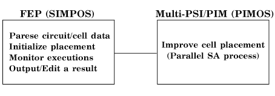

(57) Standard Cell Placement Experimental System
Machine: Multi-PSI, PIM
Environment: PIMOS, SIMPOS
Language: KL1, ESP
Source Code: 750KB(KL1)
600KB(ESP)
Documents: Manual (English/Japanese)
Overview
Expertimental system to get optimum placement in standard cell LSI
design
Features
This experimental system is constructed to examine the efficiency of
parallel processing applied to LSI design problems and to search and
develop a parallel algorithm.
The Parallel Simulated Annealing(SA) algorithm, developed by ICOT, is
adopted to obtain optimum configurations. Parallel SA is obtained by
expanding sequential SA that are known to solve the combinatorial
optimization problem.
Configuration

Functions
- Decides the physical position of each cell in standard cell LSI
design with the aim to minimize the total estimated wire length in the
chip.
- Displays the result cell placement graphically and also the
estimated value and approximate channel density.
- Parameters can be set to arbitrary values to search and examine
the performance of parallel SA algorithm.
- Monitors the procedure of parallel SA by displaying the energy on
a line graph.
- Suspension and the re-execution can be done if necessary, and
allow the user to edit a placement using the graphic interface.
FTP
- Standard Cell Placement Experimental System [262K]

www-admin@icot.or.jp